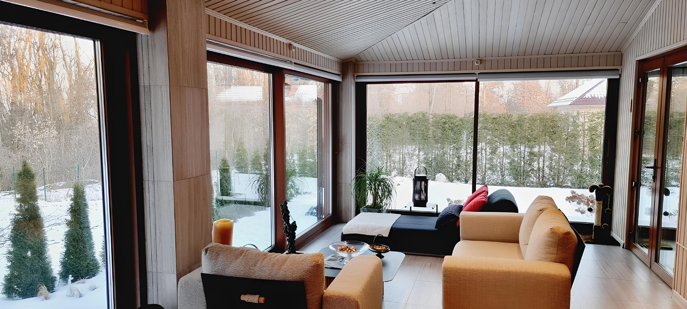
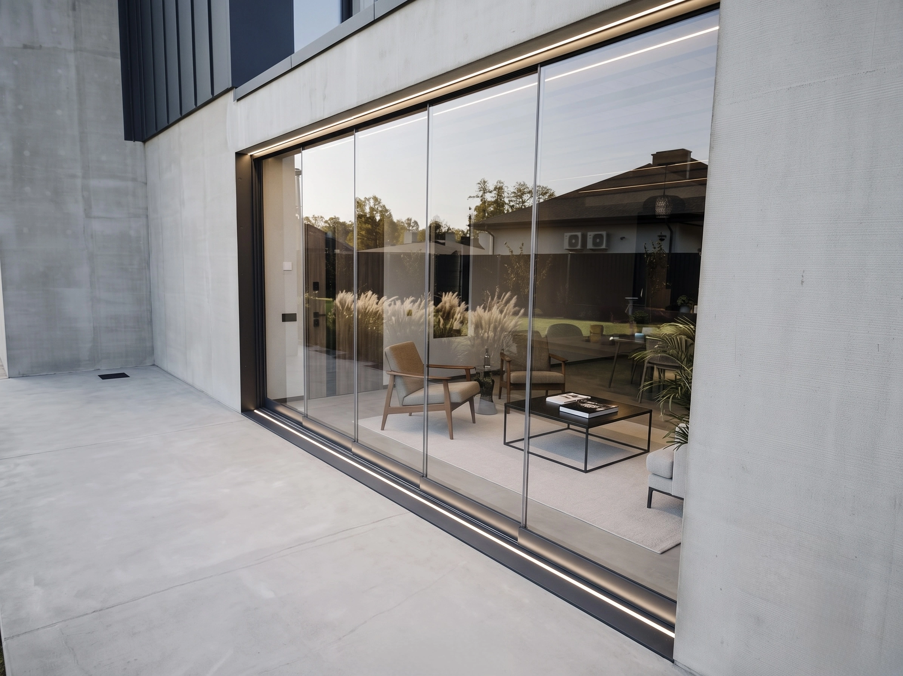
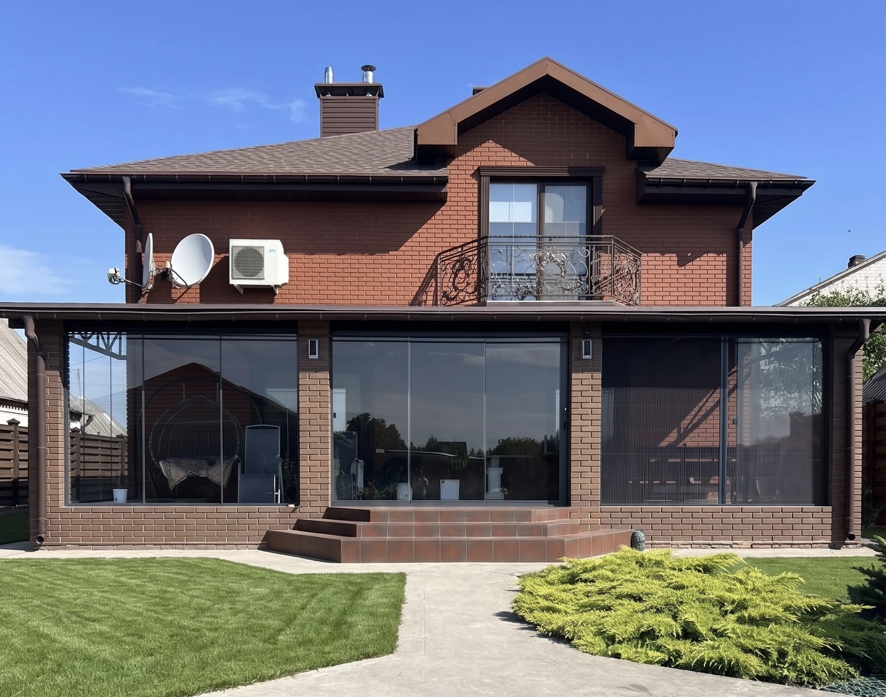

01 / PANORAMIC-GLAZING
Панорамне скління
Безрамні та мінімалістичні системи, що стирають межу між домом і краєвидом.
01 — Про систему
Скло замість стіни. Краєвид стає частиною інтер'єру.
Панорамне скління — це конструкції від підлоги до стелі з мінімальним видимим профілем або зовсім без нього. Несучу роботу виконує алюмінієва рама, прихована в підлогу, стелю та стіни, — у полі зору лишається тільки скло.
Кожна конструкція розраховується індивідуально: вітрові навантаження, вага склопакета та вузли примикання.
Прихований монтаж
Нульові пороги
Енергоефективні склопакети
02 — Анатомія системи
Розріз вузла
Вертикальний переріз панорамної конструкції: п'ять елементів, які визначають тепло, тишу та довговічність.
03 — Характеристики
Дата-шит системи
04 — Варіанти
Три конфігурації
Від повністю безрамного скла до панорамних розсувних стулок — підбираємо під архітектуру об'єкта.



Безрамне
Профіль повністю прихований у підлозі, стелі та стінах — суцільне скло, з'єднане лише тонким силіконовим швом.
Слім-профіль
Мінімальна видима рама до 25 мм між секціями — графічна сітка скла без втрати світла й огляду.
Розсувне панорамне
Великі стулки на системі lift & slide ховаються у стіну — отвір відкривається повністю, поріг лишається нульовим.
05 — Реалізовано
Проєкти в цій категорії


06 — Питання
Про панорамне скління
07 — Заявка
Розрахувати
вартість
08 — Каталог